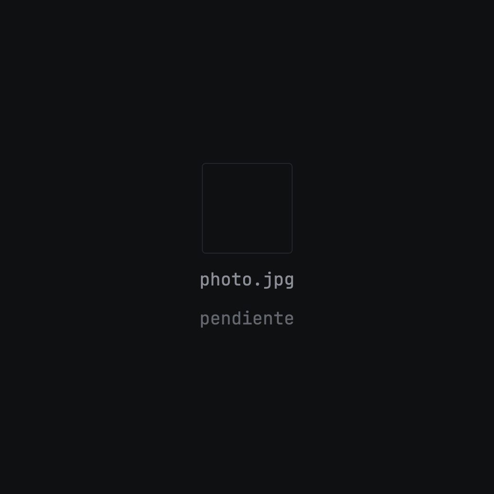
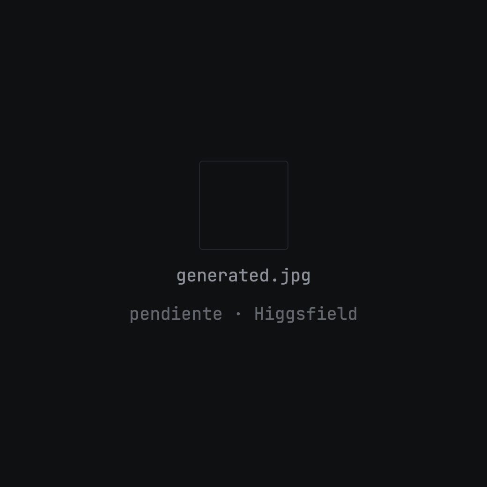
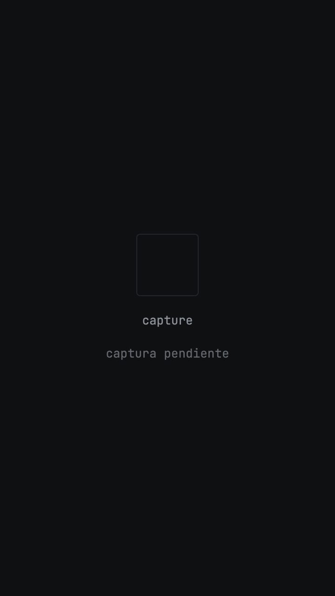
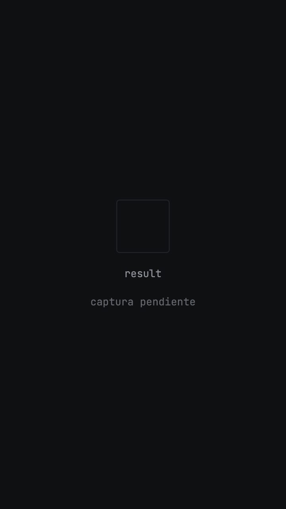
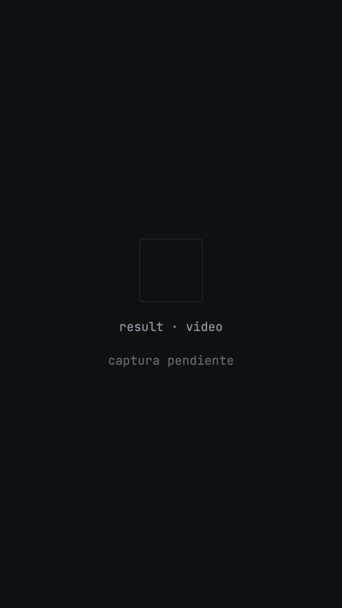

Especificación primero. Código después.
Una foto entra. Un video sale.
Tomas la foto, la IA la convierte en imagen, y esa imagen se vuelve un video corto que puedes descargar o compartir.
Sin instalar nada. Se usa desde el celular.


Números del repositorio
- 39
- tickets
- 5
- fases
- 4
- personas en paralelo
- 80
- archivos de código
- 0
- archivos escritos a mano
Números del repositorio, no de marketing.
Tres pasos, sin curva de aprendizaje.
-
Tomas la foto
Se abre la cámara trasera. Eliges el ánimo del resultado en una lista.

-
La IA hace la imagen
Tu foto entra como referencia, no como descripción. El resultado se parece a lo que fotografiaste.

-
La imagen se vuelve video
Un movimiento de cámara suave. Cuando está listo, lo descargas o lo compartes.

El método
La especificación es el código fuente.
Cuatro personas y sus agentes en el mismo repositorio terminan pisándose: dos ramas editan el mismo archivo y el merge decide quién pierde su trabajo. Aquí eso no pasa, y no es por disciplina.
El código de la aplicación no se escribió a mano. Está descrito en spec.md, repartido en 39 tickets, y el agente lo construye ticket por ticket.
Leer la especificación/speckit-specify → spec.md /speckit-plan → plan.md /speckit-tasks → tasks.md 39 tickets, 5 fases /speckit-implement → el código
## Fase 3 — El backend
Owns: lib/db.js, lib/blob.js, lib/higgsfield.js,
app/api/image/route.js, app/api/video/route.js,
app/api/video/[id]/route.js,
app/api/video/[id]/file/route.js, and their tests.
Never touches: any screen, app/dashboard/,
app/api/settings/.
Tres ramas al mismo tiempo, cero conflictos.
Cada fase declara de qué archivos es dueña y cuáles no toca. Ningún archivo aparece en dos listas, así que dos personas nunca editan lo mismo. Lo que una fase necesita de otra lo usa por la firma acordada y lo reemplaza por un doble hasta que la otra rama llega — por eso nadie espera a nadie.
Cuatro tickets deciden si esto funciona.
- T008
El backend y la base de datos falsos. Sin ellos, nadie puede trabajar en paralelo.
- T030
Las cuentas reales y las llaves de verdad.
- T032
Comprueba que el backend falso y el real coinciden. Atrapa el error que las pruebas no ven.
- T037
Recorrer la app a mano, en un celular. Ninguna prueba reemplaza esto.
Preguntas
¿De verdad nadie escribió el código?
Nadie escribió el código de la aplicación. Las especificaciones sí se escribieron a mano, y ahí está el trabajo: decidir el contrato, los estados y los límites. El agente escribe los archivos.
¿Y si el agente se equivoca?
Cada ticket lleva su prueba, y la prueba se escribe antes que el código. La fase 5 corre lint, pruebas y build sobre el merge de las tres ramas, y un ticket compara el resultado contra el original.
¿Esto se puede repetir en otro proyecto?
Sí. El repositorio incluye el prompt de replicación que reconstruye la app entera desde una carpeta vacía, con los contratos, los tokens y las dieciséis trampas que costaron tiempo la primera vez.
¿Qué se usó?
Next.js, Clerk, MongoDB Atlas, Vercel Blob y Higgsfield para imagen y video. GitHub Spec Kit para el flujo de especificación — es un proyecto open source de GitHub, no de este equipo.
Toma una foto. Mira qué sale.
Probar la appEl código, la especificación y los 39 tickets están en GitHub.